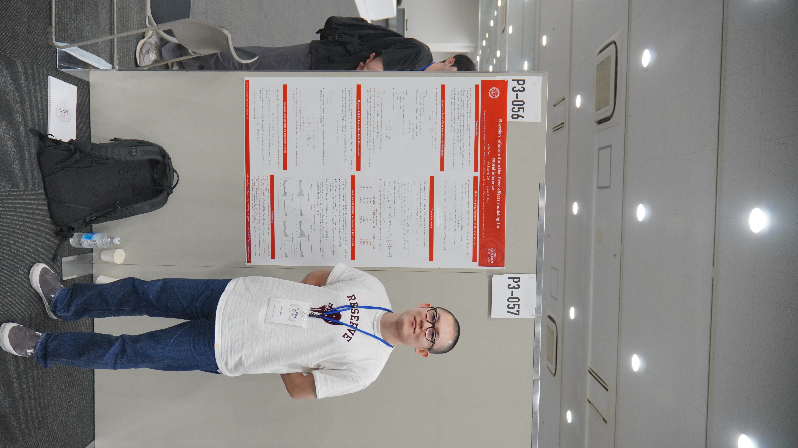

Bayesian Infinite Interactive Fixed Effects Modeling for Causal Inference
J. Seo, G. Goh, and D. K. Dey (2026).
Submitted to the Journal of Business & Economic Statistics.
M.S. Student in Statistics
Kyungpook National University · Daegu, Republic of Korea

Bayesian learning, causal inference, infinite factor models, and statistical machine learning.
J. Seo, G. Goh, and D. K. Dey (2026).
Submitted to the Journal of Business & Economic Statistics.
Kyungpook National University · GPA 4.25/4.3
Advisor: Dr. Gyuhyeong Goh
Thesis: Bayesian Infinite Interactive Fixed Effects Modeling for Causal Inference
Kyungpook National University · GPA 3.69/4.3
Minor in Economics and Trade
As a graduate researcher (Sep 2025 – present), developed a Bayesian nonparametric extension of the interactive fixed effects model and applied Gaussian process methods to treatment effect inference.
As an undergraduate researcher (Jan – Aug 2025), studied causal inference for panel data and extended synthetic control methods within a Bayesian framework.
As a graduate researcher (Sep 2026 – present), identified auxiliary variables and designed a sampling scheme.
Junior Researcher Travel Award · Bayesian Nonparametrics Networking Workshop, Jul 2026
BK21 Graduate Research Fellowship · Spring and Fall 2026
Junior BK21 Undergraduate Research Fellowship · Spring 2025
Scholarship for Academic Excellence · Spring 2025, Fall 2024, Fall 2020, and upon admission in Spring 2020
Academic Excellence Award · Regression Analysis and Lab, Fall 2024
R and LaTeX (advanced), Python (intermediate).
Bayesian computation with MCMC samplers. Optimization using the EM algorithm and stochastic gradient descent.